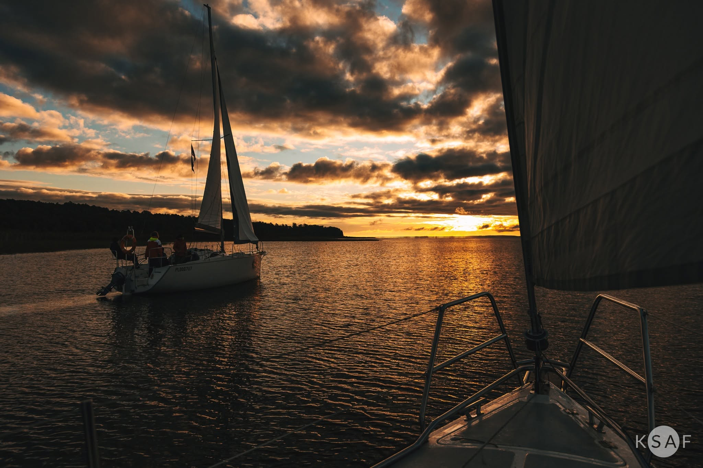

Żeglowanie jako doskonałe wakacyjne hobby
Dlaczego warto spróbwać żeglarstwa nawet jeśli nie posiadasz żadnego doświadczenia?
Skąd pasja do żagli?
Mój kontakt z żeglarstwem zaczął się jeszcze za dzieciństwa, kiedy rodzice zapisali mnie na pierwszy obóz żeglarski na lokalnym zalewie. Początkowo nie byłem pewien, czy żeglarstwo jest dla mnie, więc po tym wyjeździe nie kontynuowałem przygody z żaglami. Jednak po kilku latach, kiedy miałem już więcej swobody i możliwości, postanowiłem spróbować ponownie już na Mazurach. Zakochałem się wtedy w mazurskim krajobrazie i w samym stylu życia na żaglach i poznawaniu w ten sposób nowych osób. Od tamtego momentu, nie wyobrażam sobie lata bez conajmniej jednego rejsu.
Moje wyjazdy odbywają się zawsze w okresie wakacyjnym podczas sezonu żeglarskiego, który trwa od maja do września. Pływam głównie po Mazurach, ale zdarzały mi się epizodyczne rejsy po Bałtyku.

Najczęściej zadawane pytania
Jest to przydatna umiejętność, ale nie jest wymagana. Zakładając, że sternik i załoga przestrzegają zasad bezpieczeństwa, nigdy (naprawdę NIGDY) nie powinno dojść do sytuacji, w której ktoś wypadnie za burtę. Ale w razie potrzeby, zgodnie z przepisami na każdym jachcie musi znajdować się kamizelka ratunkowa dla każdego członka załogi, którą można zawsze założyć żeby czuć się bezpieczniej.
Nie! Wystarczy, że uprawnienia posiada sternik prowadzący jacht. Reszta załogi uczy się wszystkiego w praktyce podczas rejsu.
Najważniejsza zasada: pakujemy się w miękki worek żeglarski lub plecak (żadnych walizek na kółkach!). Niezbędne są: buty z jasną, miękką podeszwą, kurtka przeciwdeszczowa, czapka i krem z filtrem UV.